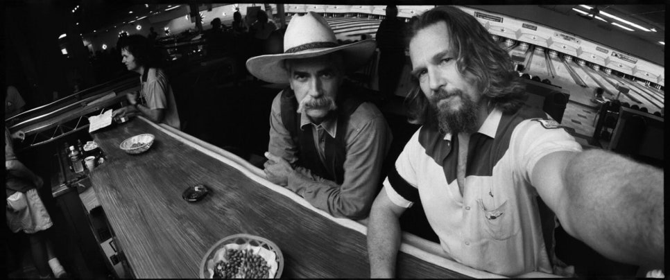
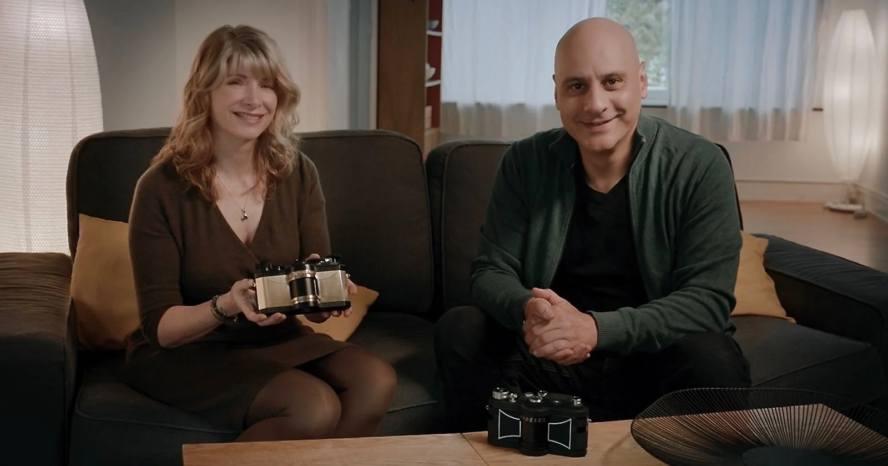
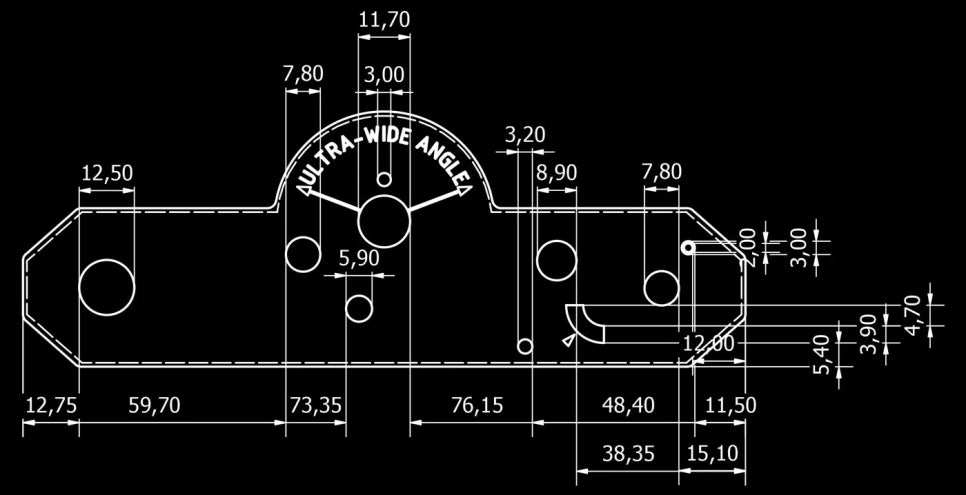
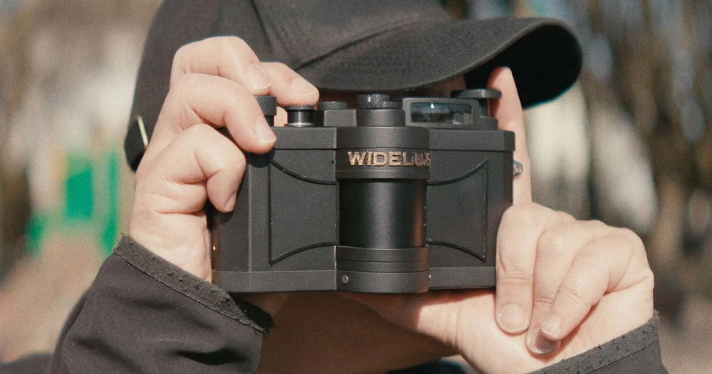

"필름 카메라를 새로 만들겠다는 결정은 이제 좀처럼 나오지 않는 시대다. 그런데 한 배우가 무심히 던진 한마디가 다섯 해 만에 한 대의 시제품으로 돌아왔다."
2025년 10월, 미네소타에서 열린 International Association for Panoramic Photography 연례 컨벤션. 한 대의 카메라가 영상으로 공개됐다. 이름은 WideluxX Prototype 0001. 손으로 한 점만 만든 시제품이다. 만든 곳은 SilverBridges. 배우 Jeff Bridges와 부인 Susan Bridges, 그리고 독일 잡지 SilvergrainClassics의 편집장 Marwan El Mozayen과 같은 곳의 Charys Schuler가 함께 세운 회사다. 단, 이 시제품이 양산 모델의 최종 형태는 아니다. 양산용 모델은 별도로 진행되고 있다.
이 카메라는 우리가 알던 그 Widelux의 직계 후속이다. 출발점은 1958년의 일본까지 거슬러 올라간다.
Widelux가 어떤 카메라였는지
Widelux는 1958년 일본의 Panon Camera Shoko가 만들기 시작한 35mm 스윙렌즈 파노라마 카메라다. 셔터를 누르면 렌즈가 좌에서 우로 한 차례 회전하며 길게 늘어진 필름 면에 한 장의 와이드 이미지를 노광한다. 일반적인 광각 렌즈처럼 단번에 찍어내는 방식이 아니라, 노출이 진행되는 동안 시야가 실제로 옮겨 다닌다. 그래서 한 프레임 안에 미세한 시간이 함께 담긴다.
마지막 모델은 Widelux F8. 2000년에 생산이 끝났다. 그리고 약 20년 전, Widelux 공장에 일어난 화재가 부품 공급과 수리 인프라까지 사실상 함께 끊어 놓았다. 이후 시장에 남은 것은 중고 F8 뿐이었고, 가격은 해마다 천천히 그러나 꾸준히 올라갔다.
이야기를 시작한 사람
Jeff Bridges는 자신의 영화 촬영 현장에 오랫동안 Widelux를 들고 다녔다. 동료 배우, 스태프, 세트 풍경을 한 장의 와이드 프레임으로 담아 왔고, 그렇게 쌓인 사진들은 한 권 분량의 기록이 됐다. 그가 2020년 한 팟캐스트에서 무심코 "Widelux를 다시 만들 수 있으면 좋겠다"고 던진 한마디가 SilverBridges의 출발점이었다.
다음의 세 장이 그가 Widelux로 오래 쌓아 온 사진의 결을 보여 준다. 한 프레임 안에 좌우가 모두 들어오지만, 그 좌우는 엄밀히 따지면 같은 시간이 아니다. 스윙렌즈가 만들어 내는 특유의 시간감이다.

2023년 여름, SilvergrainClassics가 자사 블로그에 'Widelux 부활 프로젝트'를 공식적으로 언급했다. 2024년에는 이름이 WideluxX로 정리됐고, 2025년 10월에 시제품 0001이 공개됐다. 그리고 2026년 4월, 정식 사전판매가 시작됐다. 첫 출하 예정 시점은 2026년 후반. 시제품 0001은 F8의 골격에 작은 개선들을 얹은 형태이고, 양산 모델 이름은 F10으로 정해져 있다. F9를 건너뛰고 F10이라는 점은, 부활은 하되 옛 라인의 끝 번호를 곧이곧대로 잇지는 않겠다는 의도로 읽힌다.
일본에서 시작해 독일에서 다시 만든다는 것
새 WideluxX는 일본에서 만들어지지 않는다. SilverBridges의 거점은 독일 베츨라(Wetzlar) 근교다. 라이카가 본거지로 둔 곳이고, 한 세기가 넘는 동안 정밀 카메라 제조 문화가 두텁게 쌓인 지역이다. 부품 하나하나는 원본 F8을 분해해 역설계(reverse-engineering)로 도면을 새로 그렸고, 그 도면대로 처음부터 다시 깎고 있다.


제조에 관해 SilverBridges가 미리 못 박은 원칙은 두 가지다. 첫째, 플라스틱 부품은 쓰지 않는다. 둘째, 독일 내에서, 그린 전력을 쓰는 시설에서만 만든다. 둘 다 양산성과 비용보다 카메라의 수명과 제조 방식의 윤리를 앞에 둔 결정이다. SilverBridges는 이 모델을 "세대를 건너 쓰는 수공 필름 카메라"로 포지셔닝하고 있다.
이 지점이 이번 부활 프로젝트의 정체성이다. 한 회사가 옛 일본 라인을 그대로 되살리려는 게 아니라, 다른 산업적 합리성 위에서 같은 카메라를 다시 세우려는 시도다. 같은 메커니즘, 다른 제조 철학.
그래서 우리에게 의미하는 것
스윙렌즈 파노라마는 디지털로 똑같이 흉내 내기 어려운 몇 안 되는 영역이다. 디지털 파노라마는 여러 프레임을 사후에 이어 붙이는 방식이라, 한 셔터 안에서 렌즈가 실제로 움직이며 만들어지는 특유의 시간감과 왜곡을 그대로 옮기지 못한다. 그래서 F8 중고 시장은 계속 살아 있었다. 다만 가격은 오르고 수리 가능성은 좁아지는 쪽으로 흘러가던 중이었다.
WideluxX가 2026년 후반에 정상적으로 출하된다면, 26년 만에 신품 스윙렌즈 카메라를 살 수 있게 된다. 가격은 만만치 않을 것이다. 수공 제작, 플라스틱 미사용, 독일 제조, 한정 수량. 가격을 정하는 모든 축이 위쪽을 가리킨다. 그래서 이 부활은 입문 시장의 흐름을 바꾸는 종류의 사건은 아니다. 다만 "단종이 끝은 아닐 수도 있다"는 사례 하나가 더 쌓이는 사건이다.

같은 시기에 Lucky가 자사 처방으로 컬러 필름을 다시 짜기 시작했고, Eastman Kodak이 14년 만에 자기 필름을 자기 손으로 다시 팔기 시작했다. 다 다른 이야기지만 결이 닮았다. 한 번 끊긴 라인이 다른 방식으로 다시 이어진다. WideluxX의 시제품 0001도 그 흐름 위의 한 점이다.
한 배우가 무심코 "다시 만들 수 있으면 좋겠다"고 던진 말이 다섯 해를 지나 한 대의 시제품으로 돌아왔다. 한 번 사라진 카메라가 어떻게 다시 손에 잡힐 수 있는지에 대한 작은 답이다.
정리
- 모델 WideluxX (양산 모델명 F10), 1958년 일본 Panon F8 의 직계 후속
- 제조 SilverBridges (Jeff Bridges · Susan Bridges · Marwan El Mozayen · Charys Schuler 공동 설립). 독일 베츨라 근교에서 수공 제작. 플라스틱 부품 없음, 그린 전력 시설만 사용
- 현재 상태 Prototype 0001 공개 (2025년 10월, 미네소타 IAPP 컨벤션). 사전판매 시작 (2026년 4월)
- 출하 예정 2026년 후반
- 관전 포인트 가격, 양산 모델 F10 의 실제 마감 품질, 국내 정식 유통 여부
국내 정식 출시·가격·유통 채널은 별도 확인이 필요하다. 공식 사전판매는 silvergrainclassics.com 을 통해 진행 중. 새 이미지나 정보가 추가되면 본 글에 보강할 예정이다.